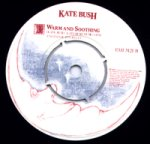

(These lyrics were originally from Andrew Marvick's
The Garden.)
 Misc page
The
Single File page
This
Woman's Work page
Misc page
The
Single File page
This
Woman's Work page
Album/Era
Alphabetical
Gaffaweb
"Warm and Soothing"
B-side to "December Will Be Magic
Again" single
Written by Kate Bush

- Warm and soothing,
- That's how I remember home.
- Walking into arms
- Through the back door.
- Hearing voices I know well,
- And long for.
- Cold and boozy,
- Our holiday in the Alps.
- Sitting in the lobby,
- Mostly smoking.
- Choking on the woozy afternoon.
- I'm reeling in the music
- And I've only had a few.
- And I'm afraid
- By the way we grow old,
- My darling.
- Abrupt, too moody,
- You making our party list.
- I remember sulking
- On the sofa.
- For most of the winter
- We were strangers.
- Just one more
- To ease the ache,
- Before the night takes me.
- When you stay asleep
- On your side of the bed,
- Don't look at me,
- Don't look at you...
- I'm reeling in the music
- And I've only had a few.
- And I'm afraid
- By the way we grow old,
- My darling.
©1980 Kate Bush Music Ltd.
The Single File page
{kind=link}